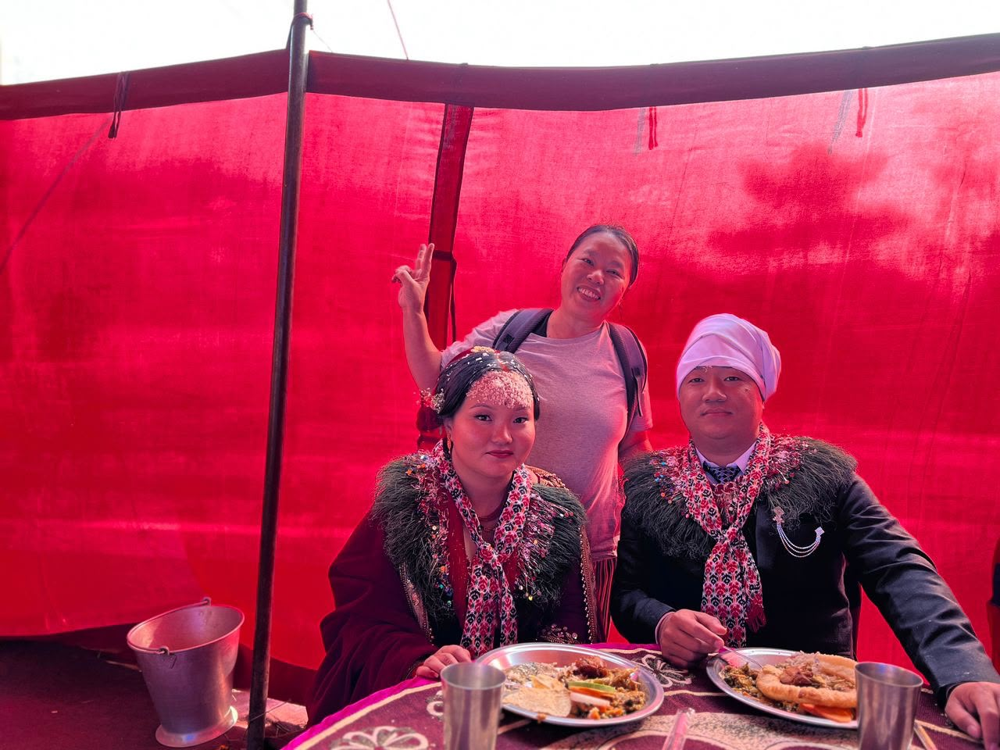

English Memory Summary
A roadside stop became a wedding memory.
On 9 December 2023, I was passing by Pokhara when music and bright wedding decorations caught my attention from the roadside. Out of curiosity, I stopped and took a few photos, thinking it would just be one more small fragment from the road.
But the day opened wider.
The new couple’s sister noticed me and came over with warmth and friendliness. Instead of seeing me as a stranger standing outside the celebration, she invited me to come in and join the wedding ceremony. Just like that, what began as a brief roadside pause turned into a vivid cultural encounter.
It was a Magar community wedding, and through a quick interview with the sister, I learned more about their marriage customs and community traditions. Her explanations were patient, generous, and full of pride. Through her words, the ceremony became more than colour and music — it became a doorway into heritage.
The whole atmosphere was alive with joy. Music filled the air, food was shared generously, and people welcomed me with the kind of openness that stays in the heart long after the road moves on. I was no longer only passing through. For a little while, I was allowed to sit inside someone else’s celebration.
That is one of the great gifts of overland travel: sometimes you stop for a photograph, and life gives you a memory instead.
中文记忆摘要
路边停一下，却走进了一场婚礼。
2023年12月9日，我经过 Pokhara 时，被路边传来的音乐和鲜艳的婚礼布置吸引住了。原本只是出于好奇停下来，拍几张照片，以为那只是旅途中又一个小碎片。
但这一天，比我想象中展开得更深。
新人的姐姐注意到我，很亲切地主动过来，不但没有把我当成站在外面的陌生人，反而热情邀请我一起加入婚礼。就这样，一次短暂的 roadside stop，变成了一场鲜活而温暖的文化相遇。
这是一场 Magar 社群的婚礼。我也趁机快速访问了新人的姐姐，听她介绍 Magar community 的婚礼习俗与传统。她讲得很耐心，也很有自豪感。透过她的说明，这场婚礼不再只是热闹的颜色与音乐，而是一扇通往族群记忆与文化传承的门。
现场充满喜悦。音乐不停，食物丰盛，人们以非常自然的热情接纳我。那一刻，我不只是一个路过的人。短短一段时间里，我被允许坐进别人的喜事里。
这也是 overland travel 最珍贵的地方之一：有时候你只是为了拍一张照片而停下，结果 life 给你的，却是一段会一直留在心里的记忆。
Related Video · Tuzi Vlogs Archive
Wedding music, hospitality, and a shared celebration.
This video preserves the Magar community wedding atmosphere in Pokhara: the music, food, colours, hospitality, and the interview that helped Tuzi understand more about the Magar community's marriage customs.